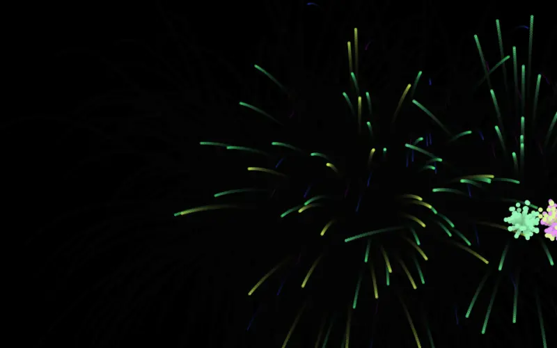
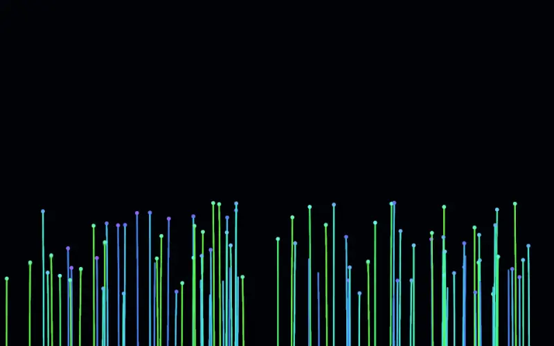
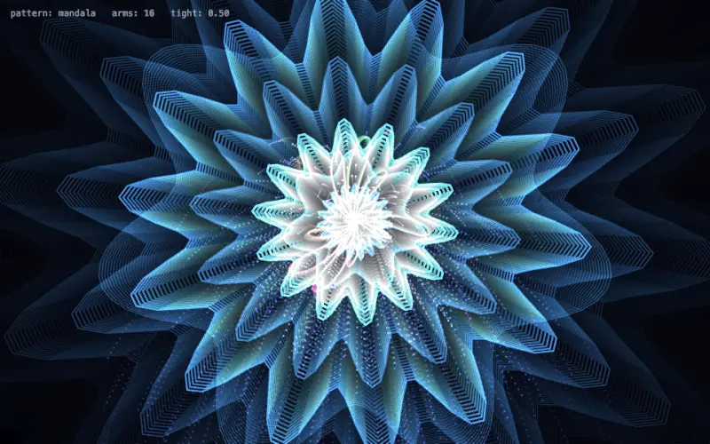
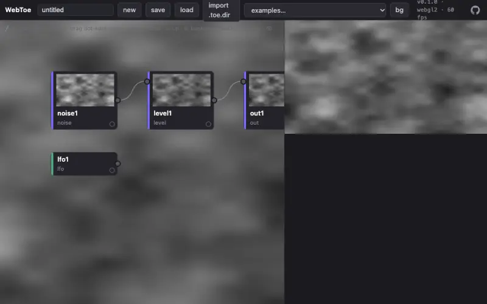
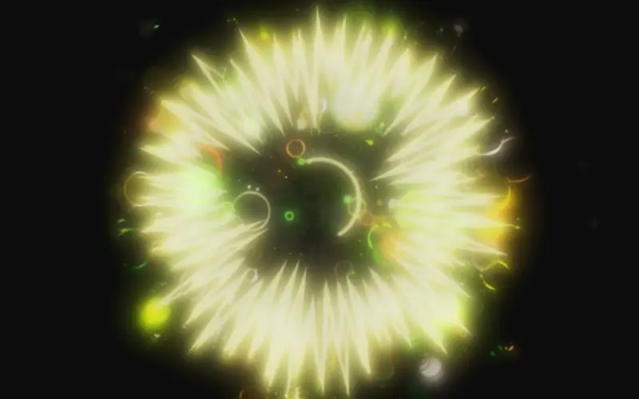
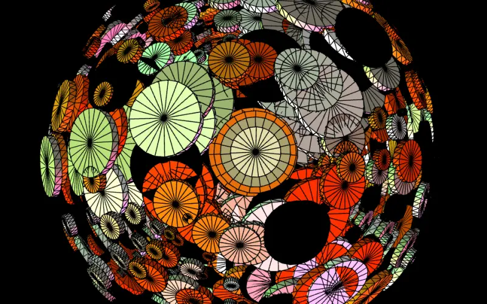
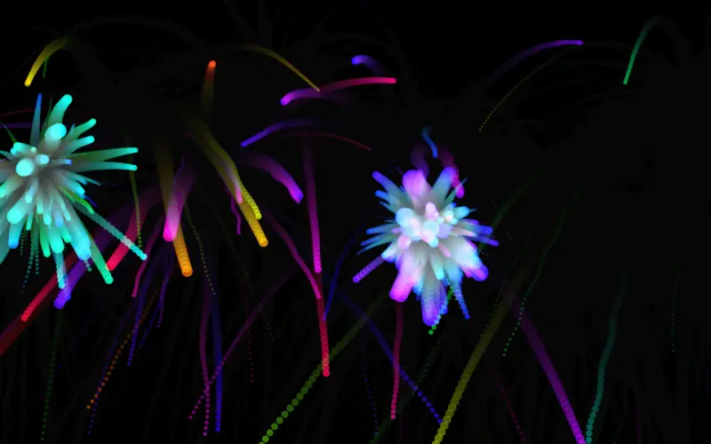
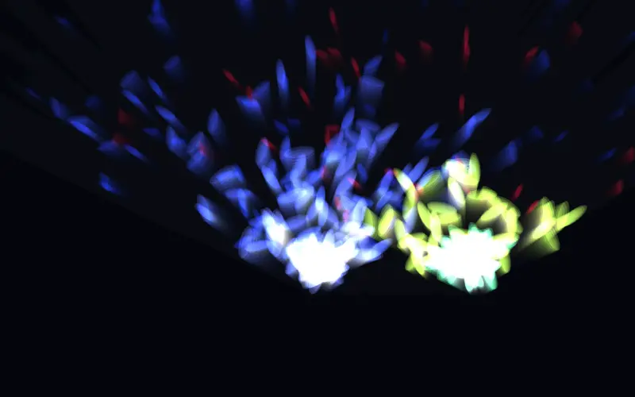
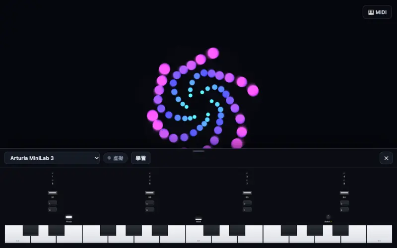

open-audiovisual A web-native framework for audiovisual performance.
Keys, knobs, voices, hands and phones become named signals. A mapping turns signals into parameters. Your world reads the parameters and turns them into image and sound, in a browser tab, on a projector, on stage.
v0.1 · MIT · zero build · zero dependencies
01 · Play This instrument is the framework running
Tap the keys or the stage, or press A to L, to play.
A–L play · Z/X octave · drag the stage
The world on this stage is a harmonograph, the pendulum drawing machine that turned musical intervals into figures. Each note you play swings one pendulum at its pitch. The chord analyzer reads what you hold and sends its consonance through one route, chord/consonance → order: a triad draws a clean figure, a cluster draws a tangle. Read the source of this instrument →
02 · How it works
Four layers, kept apart
A performance has four parts: something happens, it means something, a world reacts, and the result leaves the browser. open-audiovisual keeps the four apart, so you can swap any one of them and keep the rest.
-
L1 Input
“what is happening”
A MIDI key, a microphone, a chord, a hand in front of the camera, a phone tilted in the air. Each one becomes a signal: a name and a number, usually between 0 and 1.
pointer/x = 0.50from the instrument above -
L2 Mapping
“what it means”
Routes connect signals to params, each with a curve, a range and smoothing. One knob can drive three params. Press learn, move anything, and it is wired.
pointer/x → hue smooth 0.25from the instrument above -
L3 World
“how it behaves”
Your piece. It reads params, never inputs, and draws with whatever you like: canvas, p5, three.js, a WebToe node patch.
hue = 14from the instrument above -
L4 Output
“how it leaves”
The screen, and sound: a synth in the page, MIDI out to hardware and DAWs, OSC to Spat, Reaper, TouchDesigner or lights.
screen · 60 fpsfrom the instrument above
Around the four layers
- Timeline
- The score: param automation, scenes and cues. When a hand grabs a control, the score yields.
- Console
- The director's desk: transport, sliders, learn, meters, and a performance mode on T.
- Monitor
- Backstage on any phone or laptop on the network: clock, scene, every signal, FPS, and an alarm when the stage feed drops.
- Phones
- Phones and iPads as controllers: tilt and knock sensors, a keyboard, and a control surface grown from the world's params.
Two rules
- Signals are the only currency of input. A knob, a raised hand and a chord's consonance are equal citizens with names. That equality is what lets you mix them.
- Worlds never know who is performing them. A world reads params. The same world can be played by a pianist, a dancer, or an automation curve.
Words used on this page
- Signal
- A named value that says what is happening, such as
midi/cc/74oraudio/rms. Usually 0 to 1. Pulse signals carry events, like a note being struck. - Param
- A value the world listens to, such as
hueorbloom. The world declares it. The timeline, a slider or a route sets it. - Mapping, route
- A wire from a signal to a param, with a curve, a range and smoothing. Routes are data, saved as JSON, so a wiring can travel between venues.
- World
- The piece itself: an object with
params,init,update,renderanddispose. The only part you have to write. - Timeline
- Automation and scenes over time. The baseline that hands and knobs override.
- Show
- A world plus one
createShow()call, which assembles inputs, mapping, timeline, console, sound and backstage.
03 · Works
Nine works you can open now
Every example runs without hardware. An on-screen piano, QWERTY keys, a simulated performer or a drum machine stands in for instruments. In any example: Space plays the timeline, T is performance mode, F is fullscreen.
-

01
Hello particles
Plays with on-screen piano · QWERTY · simulated performer
The smallest complete app. Read its
main.jsfrom top to bottom and you know the framework. -

02
Chord garden
Plays with on-screen piano · QWERTY · simulated performer
A triad makes the garden bloom, a cluster makes it decay. The world listens to chord signals, never to keys. From The Last Input.
-

03
Hand instrument
Plays with camera (hands) · on-screen piano · drum machine
Fingers as an instrument: one pinch sets tightness, another grows arms, both fists bloom. Four pattern families: mandala, lissajous, spirograph, web.
-

04
WebToe stage
Plays with on-screen piano · simulated performer
The world is a WebToe node patch, TouchDesigner-style, performed through
ext()bindings. WebToe is the engine, open-audiovisual is the show. -

05
Prebiotic flake
Che-Yu Wu, 230616 Prebiotic Flake, 2023
Plays with on-screen piano · simulated performer · sound
A 2023 MIDI daily sketch replayed through the framework. The drawing code is the original. The flakes now have a voice through Tone.js.
-

06
Cylinder earth
Che-Yu Wu, 200412 3D Cylinder Earth, 2020
Plays with microphone · drum machine
A 2020 voice-controlled WebGL sketch. Lows pump the towers, highs shimmer the spin, a kick turns the palette.
-

07
Firework festival
Che-Yu Wu, 210807 Firework 花火大會, 2021
Plays with camera (hands) · on-screen piano
A 2021 sketch. Close a finger pinch and a firework launches from that hand. The particle system is the 2021 code.
-

08
Remote surface
Plays with phone or iPad · on-screen piano
The phone is the instrument panel. The world only declares params, and the control surface on the phone grows from them. Needs
node serve.json your network. -

09
MIDI controllers
Plays with MIDI controller, or the on-screen one
On-screen MiniLab 3, LPD8, Launchpad and nanoKONTROL2. Plug the real one in and the on-screen one moves with your hands.
Works 05 to 07 are artworks by Che-Yu Wu (2020 to 2023), used here as demos. The framework is MIT. The artworks remain © the artist, all rights reserved.
04 · Start
Run it in a minute
No install, no build, no dependencies. Clone, run one file, open the browser. Use Chrome or Edge for Web MIDI and the camera.
git clone https://github.com/frank890417/open-audiovisual.git
cd open-audiovisual
node serve.js # → http://localhost:8080Then open http://localhost:8080/examples/01-hello-particles/ and read its main.js.
node packages/monitor/server.js # backstage monitor (:7457)
node packages/osc/bridges/osc-bridge.js # OSC → UDP bridgeOptional, each in its own terminal: the backstage monitor and the OSC bridge to UDP.
A world is the only part you write
Declare what the piece can be performed with (params), react to events, draw. Hand it to createShow() and the rest arrives with it: piano, mapping, timeline, console, sound, backstage. Put it next to an index.html with the import map, as in example 01.
import { createShow } from '@openav/show';
import { createCanvas } from '@openav/stage';
const pulse = {
name: 'pulse',
// what the piece is performed WITH: sliders, knobs, hands, the timeline
params: [{ key: 'size', min: 10, max: 200, def: 40 }],
init({ container, signals }) {
this.view = createCanvas(container);
this.r = 0;
// a struck note is an event, so it may come straight from a signal
signals.on('midi/note/on', ({ vel }) => { this.r = 120 * vel; });
},
update(dt, state) { this.r = Math.max(0, this.r - dt * 90); this.size = state.size; },
render() {
const { ctx } = this.view, { w, h } = this.view.fit();
ctx.fillStyle = '#000'; ctx.fillRect(0, 0, w, h);
ctx.fillStyle = '#fff';
ctx.beginPath(); ctx.arc(w / 2, h / 2, this.size + this.r, 0, 7); ctx.fill();
},
dispose() { this.view.dispose(); },
};
await createShow({ world: pulse, modules: { sound: true } });Twenty packages, by layer
Plain ES modules. Import what you need through an import map, or let createShow() assemble them.
Input
@openav/midiWeb MIDI in and out, many devices, on-screen controller profiles@openav/audioMicrophone analysis: loudness, bands, brightness, onsets, drum hits@openav/chordChord detection for performance: consonance, triads, clusters@openav/poseBody and 21-point hand tracking from the camera, on the device@openav/keysOn-screen piano, QWERTY playing and a simulated performer@openav/drumsSynth kit and step sequencer that publish analyzer-shaped signals
Mapping
@openav/mappingSignal to param routes: curves, smoothing, many-to-many, learn
World
@openav/stageThe world shell: lifecycle and params, no renderer opinion@openav/world-webtoePerform a WebToe node patch as a world
Output
@openav/soundSynthesis in the page behind a small engine contract, Tone.js first@openav/oscOSC out of the browser through a small Node bridge to UDP
Spines
@openav/timelineParam automation, scenes and cues: the score of the show@openav/consoleThe director's desk and performance mode@openav/monitorBackstage view for any device on the network
Phones and tablets
@openav/relayZero-dependency room relay for phones and iPads@openav/surfaceTouchOSC-style widgets and autoSurface(params)@openav/remoteThe phone and iPad app: sensors, keyboard, control surface
Glue and agents
@openav/coreSignals, Params and Loop: what every layer speaks@openav/showcreateShow(): one call assembles the whole shell@openav/mcpMCP server for coding agents: list, read, scaffold, check
Documentation
- ArchitectureThe layer contracts, in detail
- Writing a worldThe world interface and the rule people break
- Signals referenceEvery signal the built-in inputs publish
- Show controlTimeline, scenes, performance mode, monitor, OSC
- RoadmapWhat a real show asked for next
- AGENTS.mdConventions for AI coding agents
05 · For AI agents
For AI agents
Worlds are code, and coding agents are good at code. A person describes a performance in words, the agent writes the world, and the framework runs the show.
Paste this into Claude Code, Cursor or any coding agent
Clone https://github.com/frank890417/open-audiovisual and read AGENTS.md first.
Run `node serve.js` and open http://localhost:8080/examples/01-hello-particles/ to see the smallest complete show.
Create examples/10-<name>/ by copying 01-hello-particles (or call the openav MCP tool scaffold_world), then write a World in its main.js for this piece:
<describe the performance, e.g. "a jellyfish world that blooms on consonant chords">
Rules from AGENTS.md: continuous control goes through params, and the mapper routes signals to them. Never edit packages/* to make one example look right.
Done means: npm test passes, and the new example loads with zero console errors.Connect the MCP server
The repo ships a zero-dependency MCP server over stdio. Claude Code picks it up from .mcp.json when you open the repo. For other clients, point at the file:
{
"mcpServers": {
"openav": {
"command": "node",
"args": ["/path/to/open-audiovisual/packages/mcp/server.js"]
}
}
}Tools
list_examples- which works exist, with a one-line summary each
read_doc- architecture, writing-a-world, signals, show-control, agents
scaffold_world- copy a donor example into a new numbered example
run_checks- run the test suite, the same gate CI uses
Machine-readable
- /llms.txtwhat this is, the concepts, every doc and example, in llmstxt.org format
- /llms-full.txtREADME, AGENTS.md and the docs in one file
- AGENTS.mdthe layer contracts and the two rules an agent must not break
- /create-worlda Claude Code skill that scaffolds a world from a description
application/ld+jsonthis page carries SoftwareSourceCode JSON-LD- /zh/this page in Traditional Chinese
06 · Lineage
Extracted from a show
The core of open-audiovisual comes from The Last Input (Che-Yu Wu, 2026), a 49.4-channel spatial sound performance at the IRCAM residency × C-LAB in Taipei, where a pianist feeds a living digital world. Its timeline, chord semantics, many-to-many MIDI learn and OSC batching drove a real 14-scene show before they were generalized here. The rule since then: the framework only grows features a real show asked for.
The mapping layer descends from libmapper's research on signal namespaces. The sister project WebToe is a node-based dataflow engine that imports TouchDesigner projects. WebToe is the engine, open-audiovisual is the show.
Hydra gives you improvisation. cables gives you a platform. Tone gives you sound. open-audiovisual gives you a show.
Next, from the roadmap
- Record the full signal stream of a performance and replay it into any world
- npm packages, and a docs site built on the framework itself
- A WebGPU world adapter for particle and agent worlds
- An NDI gateway so browser output enters professional video pipelines
- Several machines sharing one signal space over WebRTC
- Agents that subscribe to signals and play alongside people